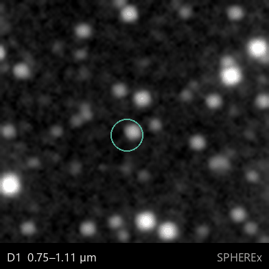

Brauner Zwerg · Y
WISE 0855
Der kälteste bekannte Braune Zwerg, 7.4 Lichtjahre entfernt, mit einer Bewegung von 8.2 Bogensekunden pro Jahr.

Der kälteste bekannte Braune Zwerg, nur 7 Lichtjahre entfernt und zu kalt, um im sichtbaren Licht zu leuchten. Die Bilder gehen die Wellenlängen durch: Zunächst enthält der Kreis nur den Schein eines Nachbarsterns. Jenseits von 4 Mikrometern erscheint ein neuer Punkt, der im Gaia-Sternkatalog nicht verzeichnet ist. Im Farbbild ist es der rote.
Worauf zu achten ist
Die Bilder gehen die Wellenlängen durch. Unterhalb von 4 Mikrometern enthält der Kreis nur den Rand eines gewöhnlichen Sterns unmittelbar westlich. In den beiden langwelligsten Detektoren erscheint eine zweite Quelle, die nicht im Gaia-Katalog steht: Das ist WISE 0855. Im Farbbild ist es der rote Punkt. Wechseln Sie in D6 zu „Besuche“, um seine Bewegung zu sehen.
SPHEREx hat 258 Aufnahmen dieser Stelle, vom 5. Mai 2025 bis zum 14. Mai 2026.
WISE 0855 in Chronosphere öffnen
Quellen: SPHEREx, NASA/JPL-Caltech, IRSA · SIMBAD · Gaia DR3 · Wikipedia